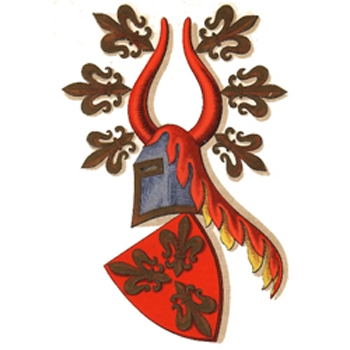

7984425 Ailed Clausdatter Grubendahl
* 1334 Själland, Danmark
† 1404 Sorö, Danmark
Blev högst 70 år
* 1334 Själland, Danmark
† 1404 Sorö, Danmark
Blev högst 70 år
15968850 Claus Grubendahl
* omkring 1370 Prästö, Danmark
† 1417
Blev ca 47 år
* omkring 1370 Prästö, Danmark
† 1417
Blev ca 47 år
31937700 Henning Grubendahl
* 1344 Prästö, Danmark
† 1391
Fogde i Söborg
Blev högst 47 år
* 1344 Prästö, Danmark
† 1391
Fogde i Söborg
Blev högst 47 år
31937701 Cecilie Jensdatter Grubbe til Gunderslevholm
* 1340 Gunderslevholm, Danmark
† efter 1412 Danmark
Blev minst 72 år
* 1340 Gunderslevholm, Danmark
† efter 1412 Danmark
Blev minst 72 år
63875402 Jens Johannesson Grubbe
* omkring 1316 Sorö, Danmark
† 1405
Blev ca 89 år
* omkring 1316 Sorö, Danmark
† 1405
Blev ca 89 år

63875403 N.N Pedersdatter von Everstein
* omkring 1340 Roskilde, Danmark
† efter 1412 Höjbygaard, Danmark
* omkring 1340 Roskilde, Danmark
† efter 1412 Höjbygaard, Danmark

15968851 Juliane Lunge
31937702 Jacob Olufsen Lunge til Höjstrup
* omkring 1336 Höjstrup, Prästö, Danmark
† före 1388 Höjstrup, Prästö, Danmark
Länsman, Hövitsman, Riksråd, Riddare
Blev ca 51 år
* omkring 1336 Höjstrup, Prästö, Danmark
† före 1388 Höjstrup, Prästö, Danmark
Länsman, Hövitsman, Riksråd, Riddare
Blev ca 51 år
63875404 Oluf Olufsen Lunge
Riddare
Riddare